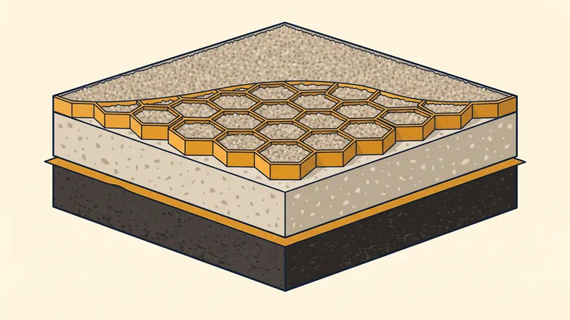

Prix Cour en Gravier & Empierrement au m² en 2026 : Guide Complet
Aménager une cour en gravier ou réaliser un empierrement reste l'une des solutions les plus économiques et durables pour habiller un extérieur, créer une allée carrossable ou un parking. Encore faut-il connaître le prix au m² selon la solution choisie et maîtriser la technique de pose pour éviter ornières, mauvaises herbes et flaques. Dans ce guide 2026, STP Terrassement détaille les tarifs du concassé, du gravier stabilisé et du géotextile, ainsi que nos conseils d'expert pour une cour réussie à Aix-en-Provence et dans toute la région PACA.

Prix d'une cour en gravier au m² en 2026
Le prix d'une cour en gravier dépend avant tout de la solution technique retenue : du simple épandage de gravillons sur géotextile jusqu'à l'allée stabilisée à la résine. Voici les fourchettes constatées en 2026 en région Provence-Alpes-Côte d'Azur, en fourni-posé (matériaux + main-d'oeuvre) :
| Solution | Prix au m² (fourni-posé) | Usage recommandé |
|---|---|---|
| Gravier simple sur géotextile | 15 - 35 €/m² | Piéton, jardin, déco |
| Empierrement / concassé compacté | 25 - 45 €/m² | Cour, parking léger |
| Gravier stabilisé (dalle nid d'abeille) | 35 - 70 €/m² | Cour carrossable, allée |
| Allée stabilisée à la résine | 60 - 100 €/m² | Allée haut de gamme, perméable |
Ces tarifs intègrent généralement le terrassement léger, la pose du géotextile anti-repousse, la fourniture et le compactage des matériaux. Les prix varient selon la surface (effet d'échelle au-delà de 100 m²), l'accessibilité du chantier et la nature du sol existant. Pour une cour de qualité durable, l'aménagement extérieur professionnel reste un investissement rentable.

Détail des postes : ce qui compose le prix
Pour comprendre un devis et le comparer en toute transparence, il faut décomposer le chantier poste par poste. Voici les principaux éléments de coût d'une cour en gravier ou d'un empierrement :
| Poste de travaux | Prix indicatif | Précisions |
|---|---|---|
| Décaissement / terrassement | 8 - 20 €/m² | Décapage 15 à 25 cm, évacuation des terres |
| Géotextile anti-repousse | 2 - 5 €/m² | Feutre 100 à 150 g/m² fourni-posé |
| Couche de fondation grave 0/31,5 | 10 - 22 €/m² | Sous-couche compactée 15 à 20 cm |
| Couche de roulement (gravillon) | 6 - 15 €/m² | Finition 4 à 8 cm (6/10, 8/16) |
| Bordures / délimitation | 15 - 45 €/ml | Béton, acier corten ou aluminium |
| Dalle stabilisatrice nid d'abeille | 12 - 25 €/m² | Option carrossable anti-ornières |
La couche de fondation en grave 0/31,5 et le géotextile sont les deux postes que l'on a tort de vouloir économiser : ce sont eux qui garantissent la tenue dans le temps. Un terrassement bien réalisé en amont conditionne toute la durabilité de l'ouvrage.
La technique de pose d'une cour en gravier
Une cour en gravier durable n'est pas un simple épandage de cailloux : c'est une véritable structure routière en miniature. Voici les étapes clés mises en oeuvre par nos équipes.
1. Le décaissement
On retire la terre végétale sur 15 à 25 cm de profondeur (jusqu'à 30-35 cm pour une cour carrossable). Cette étape, appelée décaissement, permet de créer un fond de forme stable et d'intégrer toute l'épaisseur de la structure sans surélever le terrain naturel.
2. La pose du géotextile
Un géotextile anti-repousse (feutre de 100 à 150 g/m²) est déroulé sur le fond de forme. Il joue trois rôles : empêcher la remontée des mauvaises herbes, éviter le mélange terre/gravier (qui « avale » le gravier avec le temps) et répartir les charges. Les lés se recouvrent de 20 cm minimum.
3. La couche de fondation
On met en place une sous-couche de grave 0/31,5 (concassé tout-venant mêlant cailloux et fines) sur 15 à 20 cm, compactée à la plaque vibrante ou au rouleau. Cette couche, l'empierrement proprement dit, constitue le squelette portant de la cour.
4. La couche de roulement
La finition est apportée par un gravillon décoratif sur 4 à 8 cm. La granulométrie se choisit selon l'usage et l'esthétique : 6/10 et 8/16 pour un bon confort de marche et un aspect net, jusqu'à 0/20 pour un compactage maximal sur zone roulante. Côté couleurs, le beige calcaire, l'ocre, le gris bleuté ou le porphyre rouge s'accordent au bâti provençal.
5. La pente d'écoulement et le drainage
Une pente d'écoulement de 1,5 à 2 % est impérative pour évacuer les eaux de pluie et éviter les flaques. Sur sol peu perméable ou en bas de pente, un drainage périphérique (drain agricole + regard) complète le dispositif et protège la structure du gel-dégel.
Cour carrossable ou piétonne : quelles épaisseurs ?
Le dimensionnement de la structure dépend directement de la charge supportée. Une cour qui accueille des véhicules doit être nettement plus robuste qu'une simple allée de jardin.
- Usage piéton / déco : décaissement 15 cm, géotextile, 10 cm de grave 0/31,5, 4 à 5 cm de gravillon de finition.
- Cour carrossable légère (voiture) : décaissement 25 cm, géotextile, 20 cm de grave compactée, 5 à 8 cm de gravillon.
- Cour carrossable lourde (camionnette, va-et-vient) : décaissement 30-35 cm, structure renforcée et dalle stabilisatrice nid d'abeille indispensable.
Sur les zones roulantes, le gravier stabilisé par dalles alvéolaires est la clé pour éviter les ornières : les alvéoles confinent le gravier, l'empêchent de fuir sous les roues et conservent une surface plane et perméable. Pour une voie d'accès complète, consultez notre guide dédié à l'aménagement d'allée carrossable.
Obtenez Votre Devis Cour en Gravier Gratuit
Chez STP Terrassement, nous réalisons cours en gravier, empierrements et allées stabilisées à Aix-en-Provence et dans toute la PACA. Devis détaillé, transparent et sans engagement sous 24h.
Demandez votre devis gratuitEntretien d'une cour en gravier
L'un des grands atouts du gravier est son entretien réduit, à condition d'avoir soigné la pose. Voici les gestes d'entretien à prévoir :
- Ratissage périodique pour répartir le gravier et combler les creux de passage.
- Désherbage ponctuel : grâce au géotextile, il se limite aux graines apportées par le vent (arrachage manuel, désherbage thermique).
- Recharge de gravillon tous les 3 à 5 ans (1 à 3 €/m²) pour compenser le tassement et l'enfoncement naturels.
- Nettoyage des regards et drains avant les épisodes pluvieux de l'automne méditerranéen.
Cour en gravier en Provence : les spécificités PACA
La région PACA impose quelques choix techniques propres au climat et à la géologie locale :
- Gravier calcaire local : économique et bien intégré au paysage provençal, mais il se tasse et génère de la poussière en période sèche. Un concassé propre limite ce phénomène.
- Gestion des fortes pluies : les orages méditerranéens déversent des volumes d'eau importants en peu de temps. Pente et drainage doivent être surdimensionnés pour éviter le ravinement du gravier.
- Sols argilo-calcaires : fréquents autour d'Aix, ils gonflent et se rétractent. Une sous-couche de grave bien compactée et un géotextile robuste évitent les déformations.
- Poussière et confort : pour une cour près de l'habitation, un gravillon lavé 6/10 ou 8/16 limite nettement la poussière par rapport au tout-venant brut.
Exemple de chantier réel à Aix-en-Provence
Cour carrossable en gravier stabilisé à Venelles
Projet : Création d'une cour d'entrée carrossable de 120 m² en gravier stabilisé pour une maison individuelle.
Localisation : Venelles, au nord d'Aix-en-Provence.
Contrainte : Le client souhaitait stationner deux véhicules et accueillir des livraisons sans subir d'ornières ni de flaques, le terrain étant légèrement en cuvette avec un sol argilo-calcaire.
Solution STP : Décaissement de 30 cm, pose d'un géotextile 150 g/m², mise en oeuvre de 20 cm de grave 0/31,5 compactée par couches, installation de dalles stabilisatrices nid d'abeille puis remplissage avec un gravillon beige calcaire 6/10. Création d'une pente de 2 % vers un drain périphérique raccordé à un puits perdu.
Résultat : Une cour parfaitement plane et perméable, sans aucune ornière après une saison complète incluant deux gros épisodes pluvieux. Budget final de 6 480 € TTC (soit 54 €/m²), conforme au devis. Le client a apprécié l'aspect minéral provençal et l'absence d'entretien hormis un ratissage léger.
Les erreurs courantes à éviter
- Poser le gravier directement sur la terre. Sans décaissement ni géotextile, le gravier s'enfonce, se mélange à la boue et les herbes envahissent la cour en une saison.
- Oublier le géotextile anti-repousse. C'est le poste le moins cher (2-5 €/m²) et le plus rentable : l'économiser condamne à un désherbage permanent et au mélange terre/gravier.
- Négliger la couche de fondation. Sans grave 0/31,5 compactée, une cour carrossable se déforme et forme des ornières dès les premiers passages de voiture.
- Omettre la pente d'écoulement. Une cour plate retient l'eau : flaques, boue et gravier qui migre. Une pente de 1,5 à 2 % est indispensable.
- Choisir une granulométrie inadaptée. Un gravier trop fin sur zone roulante part dans les pneus ; un gravier trop gros est inconfortable à pied. À adapter selon l'usage.
- Renoncer aux bordures. Sans délimitation, le gravier s'étale dans les massifs et la pelouse, et la cour perd sa netteté en quelques mois.
Questions fréquentes
Quel est le prix d'une cour en gravier au m² en 2026 ?
Le prix d'une cour en gravier fourni-posé varie de 15 à 35 €/m² pour un gravier simple sur géotextile, de 25 à 45 €/m² pour un empierrement en concassé et de 35 à 70 €/m² pour un gravier stabilisé sur dalle nid d'abeille. Une allée stabilisée à la résine monte à 60-100 €/m².
Quelle différence entre gravier, empierrement et concassé ?
Le gravier désigne des cailloux roulés ou concassés de finition (6/10, 8/16). L'empierrement est une couche de pierres concassées formant la structure portante. Le concassé (grave 0/31,5) est un mélange de cailloux et de fines qui se compacte pour servir de fondation stable.
Faut-il un géotextile sous le gravier d'une cour ?
Oui, le géotextile anti-repousse est indispensable. Posé entre le fond de forme et la couche de grave, il empêche la remontée des mauvaises herbes, évite le mélange terre-gravier et stabilise l'ensemble. Comptez 2 à 5 €/m² fourni-posé.
Quelle épaisseur de gravier pour une cour carrossable ?
Pour une cour carrossable supportant des véhicules, prévoyez un décaissement de 25 à 35 cm avec 20 cm de grave 0/31,5 compactée, puis 5 à 8 cm de gravillon de finition. Pour un usage piéton, 15 à 20 cm de décaissement suffisent.
Comment éviter les ornières et les flaques sur une cour en gravier ?
Pour éviter les ornières, utilisez des dalles stabilisatrices en nid d'abeille qui confinent le gravier, soignez le compactage de la sous-couche et prévoyez une pente d'écoulement de 1,5 à 2 %. Le gravier stabilisé empêche la formation de creux sous le passage des roues.
Une cour en gravier demande-t-elle beaucoup d'entretien ?
L'entretien reste léger : un ratissage périodique pour égaliser le gravier, un désherbage ponctuel et une recharge de gravillon tous les 3 à 5 ans (1 à 3 €/m²). Le géotextile et les dalles stabilisatrices réduisent fortement ces interventions.
Quel gravier choisir en Provence et à Aix-en-Provence ?
En PACA, le gravier calcaire concassé local est le plus économique et bien intégré au paysage, mais il génère de la poussière et se tasse. Pour limiter poussière et boue lors des fortes pluies méditerranéennes, privilégiez un concassé propre 0/20 en fondation et un drainage adapté.
Le gravier stabilisé avec dalle nid d'abeille vaut-il son prix ?
Oui pour une cour carrossable ou une allée fréquentée : à 35-70 €/m², la dalle alvéolaire empêche les ornières, le déplacement du gravier et la formation de flaques, tout en gardant un aspect minéral perméable. C'est le meilleur compromis durabilité/esthétique sur le long terme.
Pour aller plus loin
Pourquoi faire appel à un pro comme STP Terrassement
Confier votre cour en gravier ou votre empierrement à STP Terrassement, c'est s'appuyer sur une entreprise locale implantée à Simiane-Collongue (13109) et intervenant chaque jour à Aix-en-Provence et dans toute la région PACA. Nos équipes maîtrisent le décaissement, le compactage, la pose du géotextile et des dalles stabilisatrices, ainsi que la gestion du drainage indispensable sous notre climat méditerranéen. Nous bénéficions d'une garantie décennale en cours de validité et de plus de 15 ans d'expérience cumulée sur des chantiers d'aménagement extérieur. Nous établissons un devis détaillé gratuit et sans engagement sous 24h, nous respectons les plannings et nous tenons le budget validé. Choisir STP, c'est la garantie d'une cour plane, perméable et durable, sans ornières ni mauvaises herbes. Demandez votre devis gratuit en ligne ou appelez-nous au 07 45 14 20 49 pour échanger directement avec un chargé d'affaires.